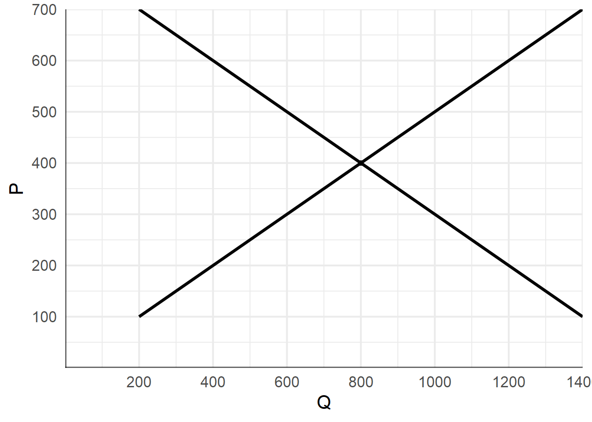
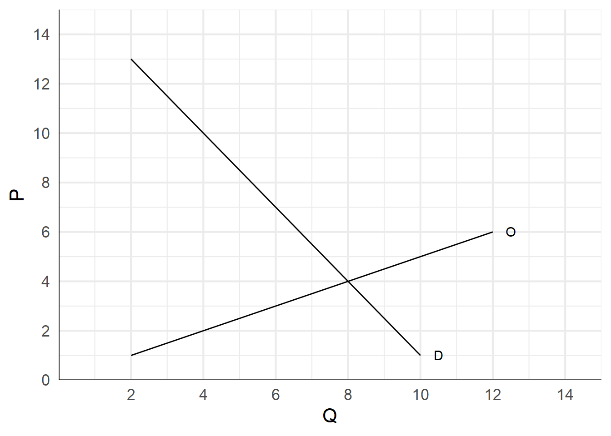
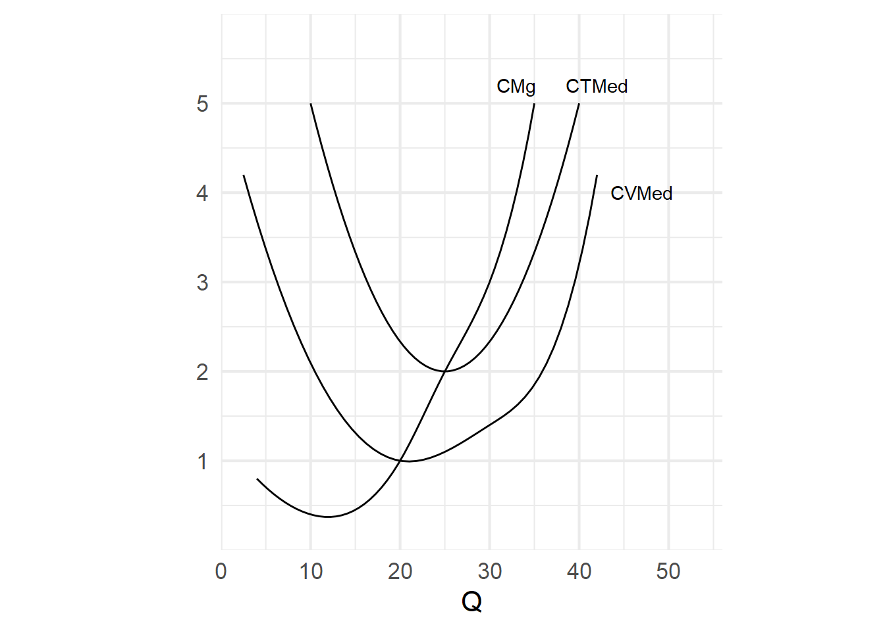

Oferta y Demanda Grafique el efecto de los siguientes shocks en el equilibrio del mercado de un bien de:
- Una crisis económica que reduce el ingreso de los consumidores.
- Un aumento en el precio de un bien sustituto.
- Un aumento en el precio de un insumo para su producción.
Dibuje el diagrama de oferta y demanda antes y después de la ocurrencia de cada shock. Explique el efecto sobre las variables endógenas.
Tope de Alquileres La siguiente gráfica muestra el equilibrio en el mercado de alquileres.

¿Cuál es el alquiler de equilibrio si el gobierno no interviene?¿Y la cantidad?
Si el gobierno impone un tope a los alquileres de $300, ¿cuál será el nivel de empleo? ¿Esta política genera algún desequilibrio?
Si el gobierno impone un tope a los alquileres de $600, ¿cuál será el nivel de empleo? ¿Esta política genera algún desequilibrio?
Elasticidad (2) La siguiente tabla refleja la curva de demanda de un producto:
| Punto | P | Qd |
|---|---|---|
| A | 100 | 40 |
| B | 80 | 60 |
| C | 60 | 80 |
| D | 40 | 100 |
- Graficar la curva de demanda.
- Calcular la elasticidad entre los puntos a) A y B, b) B y C y c) C y D.
Impuestos La siguiente gráfica muestra el equilibrio en el mercado de hamburguesas.

Si el gobierno decide imponer un impuesto de $8 por unidad:
- Graficar el nuevo equilibrio en el mercado.
- Calcular los precios y las cantidades en el nuevo equilibio.
- Calcular la recaudación del impuesto. ¿Sobre quién recae la mayor parte del impuesto, sobre los consumidores o los productores?
- Calcular la pérdida de eficiencia ocasionada por el impuesto.
Utilidad Marginal
Explicar la diferencia entre la utilidad total y la utilidad marginal. Si un consumidor consume solo dos bienes, ¿qué relación tienen sus utilidades si el consumidor maximiza su utilidad total?
| Bananas | Umg B | Manzanas | Umg M |
|---|---|---|---|
| 1 | 30 | 1 | 40 |
| 2 | 24 | 2 | 34 |
| 3 | 18 | 3 | 24 |
| 4 | 12 | 4 | 16 |
| 5 | 6 | 5 | 8 |
| 6 | 0 | 6 | 0 |
Un consumidor tiene un presupuesto de $10. La tabla anterior muestra la utilidad marginal para cada cantidad de bananas y manzanas consumidas.
Si el precio de las bananas es $1 y el de las manzanas $2 ¿cuál será la utilidad marginal por peso gastado para las cantidades de la tabla? ¿cómo asigna su presupuesto entre ambos bienes?
Si el precio de las bananas sube a $2, ¿cómo cambia la utilidad marginal por peso? ¿cuál será la nueva combinación de manzanas y bananas que comprará este consumidor?
Costos El siguiente gráfico muestra las curvas de costos de un productor de soja.

- Explique la relación entre la curva de Costo Marginal y la de Costo Medio.
- Hacer una tabla con la cantidad producida si el precio es $1, $2 y $3. ¿Cómo se llama esta curva?
- Explicar si la empresa tiene resultados económicos positivos o negativos para cada uno de estos precios.
Entrada y salida de Empresas Suponga que una automotóra que vende autos en competencia perfecta tiene un costo medio de $10.000 por unidad vendida y un precio de $12.500. ¿Cómo son los resultados económicos de la empresa? ¿Qué sucede en este mercado en el largo plazo?